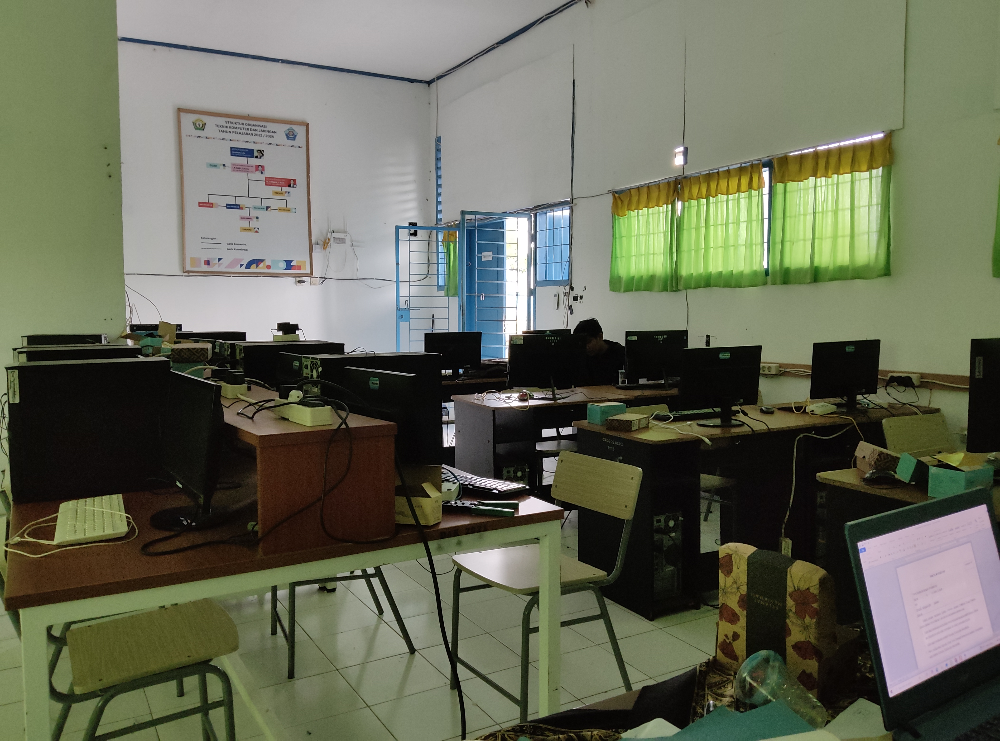

Sinergi Digital di Pulau Makassar: Catatan Penguji UKK SMK Negeri 4 Baubau 🌊💻
📅 25 April 2026

Menjadi bagian dari proses penjaminan mutu pendidikan vokasi adalah sebuah kehormatan. Sejak Senin hingga Sabtu ini, saya berkesempatan mewakili Dinas Komunikasi dan Informatika (Diskominfo) Kota Baubau untuk menguji Uji Kompetensi Keahlian (UKK) di SMK Negeri 4 Baubau, sebuah sekolah yang berdiri kokoh di tengah keindahan Pulau Makassar (Puma).
🇮🇩 Perjalanan Pagi: Dari Jembatan Batu ke Negeri Para Taruna
Setiap pagi, rutinitas dimulai dengan menyeberangi selat menggunakan jarangka (perahu tradisional penyeberangan). Suasana laut yang tenang di pagi hari memberikan perspektif berbeda; bahwa transformasi digital tidak hanya milik pusat kota, tetapi juga harus menjangkau mereka yang berada di pesisir.
🧠 Menguji Kompetensi TKJ: Fokus pada Konektivitas
Sebagai penguji eksternal untuk jurusan Teknik Komputer dan Jaringan (TKJ), fokus utama pekan ini adalah memastikan para siswa mampu merancang dan mengonfigurasi jaringan yang andal. Beberapa poin penilaian utama meliputi:
- Konfigurasi Router: Penggunaan perangkat MikroTik untuk manajemen gateway.
- Network Security: Implementasi firewall dan proteksi akses.
- Sistem Hotspot: Membangun layanan Wi-Fi berbasis voucher.
💡 Kolaborasi Pemerintah dan Pendidikan
Kehadiran Diskominfo adalah bentuk nyata keterlibatan pemerintah dalam menyelaraskan kurikulum sekolah dengan kebutuhan riil pembangunan kota pintar (Smart City). Kami ingin memastikan bahwa lulusan dari Pulau Makassar memiliki kompetensi yang kompetitif.
Sumber: Pengalaman Pribadi | Penulis: Muhdan Fyan Syah Sofian
Ditulis menggunakan Gemini CLI